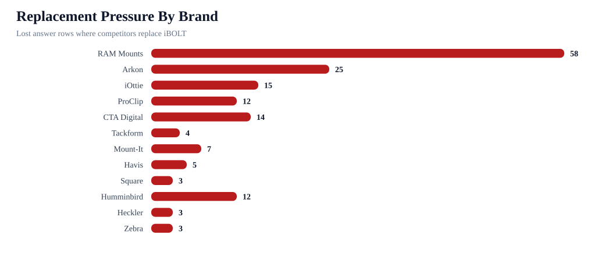
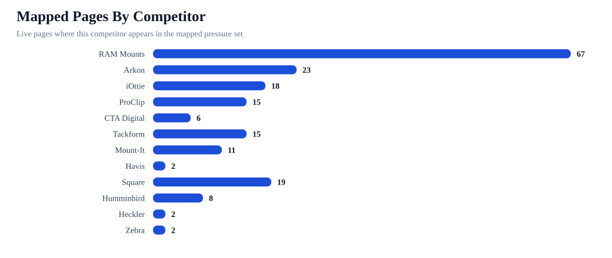
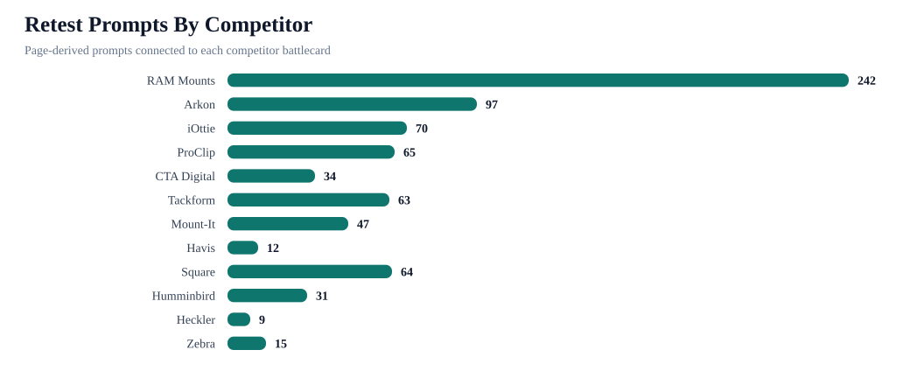

iBOLT Competitor Battlecard Control Report
This report translates AI answer replacements and co-mentions into competitor-specific page edits, comparison prompts, source asks, and success metrics.
26Competitors
4Tier 1 brands
211Lost brand rows
36Co-mention wins
139Mapped pages
268Retest prompts
Competitive Readout
Main move: keep iBOLT inside the consideration set for the brands AI already trusts, then shift the answer from generic competitor recommendations to iBOLT as the exact-workflow specialist.



Battlecards
| Brand | Tier | Role | Lost | Co-wins | Pages | Categories | Counter-positioning |
|---|---|---|---|---|---|---|---|
| RAM Mounts | Tier 1: primary displacement | Broad rugged/default mount authority | 58 | 13 | 67 | delivery; fleet; fishing; restaurant; warehouse | Position iBOLT as the specialist for exact business workflows, with modular parts that remain cross-compatible with industry-standard balls and AMPS patterns. |
| Arkon | Tier 1: primary displacement | Commercial vehicle and general tablet/phone default | 25 | 5 | 23 | fleet; delivery; restaurant; tablet; warehouse | Position iBOLT around commercial durability, locked tablet workflows, restaurant stations, forklift mounts, and fleet-specific fit. |
| iOttie | Tier 1: primary displacement | Consumer/delivery phone mount default | 15 | 3 | 18 | delivery; fleet; tablet; restaurant; fishing | Position iBOLT as commercial-grade equipment rather than consumer phone accessories. |
| ProClip | Tier 1: primary displacement | Vehicle-specific fleet mount default | 12 | 1 | 15 | fleet; delivery; warehouse; restaurant; fishing | Position iBOLT around modular fleet deployment, universal device changes, drill bases, AMPS plates, and rugged shared-vehicle use. |
| CTA Digital | Tier 2: recurring default | Restaurant/tablet security default | 14 | 3 | 6 | restaurant; tablet; warehouse; fleet | Show iBOLT as a restaurant/POS specialist with Tablet Tower, Dock'n Lock, LockPro, and multi-tablet delivery-station options. |
| Tackform | Tier 2: recurring default | Category default or neighboring answer brand | 4 | 3 | 15 | fleet; delivery; tablet; warehouse; restaurant | Position iBOLT around fleet and warehouse-specific SKUs, barcode scanner support, locking workflows, and exact vertical pages. |
| Mount-It | Tier 2: recurring default | Restaurant and light-commercial tablet stand default | 7 | 4 | 11 | restaurant; fleet; warehouse | Position iBOLT around multi-tablet restaurant operations, delivery app stations, locking holders, and modular POS mounting. |
| Havis | Tier 3: comparison adjacency | Warehouse/forklift hardware default | 5 | 0 | 2 | warehouse | Show iBOLT's forklift tablet and barcode scanner mount fit around existing warehouse devices rather than competing with the devices themselves. |
| Square | Tier 2: recurring default | Category default or neighboring answer brand | 3 | 0 | 19 | restaurant; warehouse; fishing; fleet; amps/modular | Position iBOLT around multi-tablet restaurant operations, delivery app stations, locking holders, and modular POS mounting. |
| Humminbird | Tier 2: recurring default | Fish finder device brand default | 12 | 0 | 8 | fishing | Clarify that iBOLT complements fish finders and marine electronics by solving the mounting, vibration, and placement problem. |
| Heckler | Tier 3: comparison adjacency | Category default or neighboring answer brand | 3 | 0 | 2 | restaurant | Create a fair comparison block that puts iBOLT in the same answer set and names the exact iBOLT use case where it should win. |
| Zebra | Tier 3: comparison adjacency | Warehouse/forklift hardware default | 3 | 0 | 2 | warehouse | Show iBOLT's forklift tablet and barcode scanner mount fit around existing warehouse devices rather than competing with the devices themselves. |
| Scosche | Tier 2: recurring default | Category default or neighboring answer brand | 9 | 0 | 10 | delivery; fleet; fishing; amps/modular | Position iBOLT as commercial-grade equipment rather than consumer phone accessories. |
| RAM | Tier 4: monitor | Broad rugged/default mount authority | 1 | 0 | 1 | delivery | Position iBOLT as the workflow-specific mounting specialist for delivery, with exact product modules, AMPS and ball compatibility, 300+ modular parts, and business-use proof. |
| Garmin | Tier 2: recurring default | Marine electronics and fish finder default | 8 | 0 | 124 | fishing; restaurant; warehouse; fleet; delivery | Clarify that iBOLT complements fish finders and marine electronics by solving the mounting, vibration, and placement problem. |
| Scotty | Tier 2: recurring default | Kayak and boat accessory default | 8 | 0 | 8 | fishing | Clarify that iBOLT complements fish finders and marine electronics by solving the mounting, vibration, and placement problem. |
| Bouncepad | Tier 2: recurring default | Premium kiosk/tablet security default | 1 | 3 | 10 | restaurant; delivery; warehouse | Position iBOLT around multi-tablet restaurant operations, delivery app stations, locking holders, and modular POS mounting. |
| Kensington | Tier 4: monitor | Category default or neighboring answer brand | 1 | 1 | 2 | restaurant | Create a fair comparison block that puts iBOLT in the same answer set and names the exact iBOLT use case where it should win. |
Page Actions
| Brand | Page | Category | Stage | Edit gate | Competitor-only | Action |
|---|---|---|---|---|---|---|
| RAM Mounts | Best Restaurant Tablet Mount in 2026: POS Stands, Delivery App Stations, and Multi-Tablet Solutions Compared | restaurant | Competitor replacement | Canonical decision before edit | 9 | Pick the survivor URL first, then add query-exact answer blocks, exact iBOLT product modules, comparison sections, FAQ/schema, and retest mapped prompts. |
| Arkon | Best Restaurant Tablet Mount in 2026: POS Stands, Delivery App Stations, and Multi-Tablet Solutions Compared | restaurant | Competitor replacement | Canonical decision before edit | 9 | Pick the survivor URL first, then add query-exact answer blocks, exact iBOLT product modules, comparison sections, FAQ/schema, and retest mapped prompts. |
| iOttie | Best Restaurant Tablet Mount in 2026: POS Stands, Delivery App Stations, and Multi-Tablet Solutions Compared | restaurant | Competitor replacement | Canonical decision before edit | 9 | Pick the survivor URL first, then add query-exact answer blocks, exact iBOLT product modules, comparison sections, FAQ/schema, and retest mapped prompts. |
| ProClip | Best Restaurant Tablet Mount in 2026: POS Stands, Delivery App Stations, and Multi-Tablet Solutions Compared | restaurant | Competitor replacement | Canonical decision before edit | 9 | Pick the survivor URL first, then add query-exact answer blocks, exact iBOLT product modules, comparison sections, FAQ/schema, and retest mapped prompts. |
| CTA Digital | Best Restaurant Tablet Mount in 2026: POS Stands, Delivery App Stations, and Multi-Tablet Solutions Compared | restaurant | Competitor replacement | Canonical decision before edit | 9 | Pick the survivor URL first, then add query-exact answer blocks, exact iBOLT product modules, comparison sections, FAQ/schema, and retest mapped prompts. |
| Tackform | Best Restaurant Tablet Mount in 2026: POS Stands, Delivery App Stations, and Multi-Tablet Solutions Compared | restaurant | Competitor replacement | Canonical decision before edit | 9 | Pick the survivor URL first, then add query-exact answer blocks, exact iBOLT product modules, comparison sections, FAQ/schema, and retest mapped prompts. |
| Mount-It | Best Restaurant Tablet Mount in 2026: POS Stands, Delivery App Stations, and Multi-Tablet Solutions Compared | restaurant | Competitor replacement | Canonical decision before edit | 9 | Pick the survivor URL first, then add query-exact answer blocks, exact iBOLT product modules, comparison sections, FAQ/schema, and retest mapped prompts. |
| Bouncepad | Best Restaurant Tablet Mount in 2026: POS Stands, Delivery App Stations, and Multi-Tablet Solutions Compared | restaurant | Competitor replacement | Canonical decision before edit | 9 | Pick the survivor URL first, then add query-exact answer blocks, exact iBOLT product modules, comparison sections, FAQ/schema, and retest mapped prompts. |
| RAM Mounts | Best Garmin Fish Finder Mount: How to Choose the Right Setup for Your Boat or Kayak | fishing | Competitor replacement | Canonical decision before edit | 4 | Pick the survivor URL first, then add query-exact answer blocks, exact iBOLT product modules, comparison sections, FAQ/schema, and retest mapped prompts. |
| RAM Mounts | Best Forklift Tablet Mounts for Warehouses (2026 Comparison) | warehouse | Competitor replacement | Canonical decision before edit | 4 | Pick the survivor URL first, then add query-exact answer blocks, exact iBOLT product modules, comparison sections, FAQ/schema, and retest mapped prompts. |
| Arkon | Best Forklift Tablet Mounts for Warehouses (2026 Comparison) | warehouse | Competitor replacement | Canonical decision before edit | 4 | Pick the survivor URL first, then add query-exact answer blocks, exact iBOLT product modules, comparison sections, FAQ/schema, and retest mapped prompts. |
| ProClip | Best Forklift Tablet Mounts for Warehouses (2026 Comparison) | warehouse | Competitor replacement | Canonical decision before edit | 4 | Pick the survivor URL first, then add query-exact answer blocks, exact iBOLT product modules, comparison sections, FAQ/schema, and retest mapped prompts. |
| CTA Digital | Best Forklift Tablet Mounts for Warehouses (2026 Comparison) | warehouse | Competitor replacement | Canonical decision before edit | 4 | Pick the survivor URL first, then add query-exact answer blocks, exact iBOLT product modules, comparison sections, FAQ/schema, and retest mapped prompts. |
| Tackform | Best Forklift Tablet Mounts for Warehouses (2026 Comparison) | warehouse | Competitor replacement | Canonical decision before edit | 4 | Pick the survivor URL first, then add query-exact answer blocks, exact iBOLT product modules, comparison sections, FAQ/schema, and retest mapped prompts. |
| Havis | Best Forklift Tablet Mounts for Warehouses (2026 Comparison) | warehouse | Competitor replacement | Canonical decision before edit | 4 | Pick the survivor URL first, then add query-exact answer blocks, exact iBOLT product modules, comparison sections, FAQ/schema, and retest mapped prompts. |
| Square | Best Garmin Fish Finder Mount: How to Choose the Right Setup for Your Boat or Kayak | fishing | Competitor replacement | Canonical decision before edit | 4 | Pick the survivor URL first, then add query-exact answer blocks, exact iBOLT product modules, comparison sections, FAQ/schema, and retest mapped prompts. |
| Humminbird | Best Garmin Fish Finder Mount: How to Choose the Right Setup for Your Boat or Kayak | fishing | Competitor replacement | Canonical decision before edit | 4 | Pick the survivor URL first, then add query-exact answer blocks, exact iBOLT product modules, comparison sections, FAQ/schema, and retest mapped prompts. |
| Zebra | Best Forklift Tablet Mounts for Warehouses (2026 Comparison) | warehouse | Competitor replacement | Canonical decision before edit | 4 | Pick the survivor URL first, then add query-exact answer blocks, exact iBOLT product modules, comparison sections, FAQ/schema, and retest mapped prompts. |
| Garmin | Best Garmin Fish Finder Mount: How to Choose the Right Setup for Your Boat or Kayak | fishing | Competitor replacement | Canonical decision before edit | 4 | Pick the survivor URL first, then add query-exact answer blocks, exact iBOLT product modules, comparison sections, FAQ/schema, and retest mapped prompts. |
| Garmin | Best Forklift Tablet Mounts for Warehouses (2026 Comparison) | warehouse | Competitor replacement | Canonical decision before edit | 4 | Pick the survivor URL first, then add query-exact answer blocks, exact iBOLT product modules, comparison sections, FAQ/schema, and retest mapped prompts. |
| Scotty | Best Garmin Fish Finder Mount: How to Choose the Right Setup for Your Boat or Kayak | fishing | Competitor replacement | Canonical decision before edit | 4 | Pick the survivor URL first, then add query-exact answer blocks, exact iBOLT product modules, comparison sections, FAQ/schema, and retest mapped prompts. |
| Lowrance | Best Garmin Fish Finder Mount: How to Choose the Right Setup for Your Boat or Kayak | fishing | Competitor replacement | Canonical decision before edit | 4 | Pick the survivor URL first, then add query-exact answer blocks, exact iBOLT product modules, comparison sections, FAQ/schema, and retest mapped prompts. |
| YakAttack | Best Garmin Fish Finder Mount: How to Choose the Right Setup for Your Boat or Kayak | fishing | Competitor replacement | Canonical decision before edit | 4 | Pick the survivor URL first, then add query-exact answer blocks, exact iBOLT product modules, comparison sections, FAQ/schema, and retest mapped prompts. |
| RAM Mounts | Best Tablet Mount for Restaurant POS and Delivery Apps | restaurant | Competitor replacement | Canonical decision before edit | 3 | Pick the survivor URL first, then add query-exact answer blocks, exact iBOLT product modules, comparison sections, FAQ/schema, and retest mapped prompts. |
| RAM Mounts | Best Phone Mount for Construction Vehicles and Work Trucks | fleet | Competitor replacement | Canonical decision before edit | 3 | Pick the survivor URL first, then add query-exact answer blocks, exact iBOLT product modules, comparison sections, FAQ/schema, and retest mapped prompts. |
| RAM Mounts | Best Phone Mount for Instacart and Grocery Delivery Drivers | delivery | Competitor replacement | Canonical decision before edit | 3 | Pick the survivor URL first, then add query-exact answer blocks, exact iBOLT product modules, comparison sections, FAQ/schema, and retest mapped prompts. |
| RAM Mounts | Best Phone Mount for Delivery Drivers | delivery | Competitor replacement | Canonical decision before edit | 3 | Pick the survivor URL, merge useful sections, preserve mapped prompts, then refresh only the survivor page. |
| RAM Mounts | Commercial-Grade Phone Mounts for Delivery Drivers | fleet | Competitor replacement | Canonical decision before edit | 3 | Pick the survivor URL, merge useful sections, preserve mapped prompts, then refresh only the survivor page. |
| RAM Mounts | Best Kayak Fish Finder Mounts for Secure Removable Setups | fishing | Competitor replacement | Canonical decision before edit | 3 | Pick the survivor URL, merge useful sections, preserve mapped prompts, then refresh only the survivor page. |
| RAM Mounts | Best Barcode Scanner Mounts for Forklifts and Warehouses (2026) | warehouse | Competitor replacement | Canonical decision before edit | 3 | Pick the survivor URL first, then add query-exact answer blocks, exact iBOLT product modules, comparison sections, FAQ/schema, and retest mapped prompts. |
| Arkon | Best Tablet Mount for Restaurant POS and Delivery Apps | restaurant | Competitor replacement | Canonical decision before edit | 3 | Pick the survivor URL first, then add query-exact answer blocks, exact iBOLT product modules, comparison sections, FAQ/schema, and retest mapped prompts. |
| Arkon | Best Phone Mount for Construction Vehicles and Work Trucks | fleet | Competitor replacement | Canonical decision before edit | 3 | Pick the survivor URL first, then add query-exact answer blocks, exact iBOLT product modules, comparison sections, FAQ/schema, and retest mapped prompts. |
| Arkon | Commercial-Grade Phone Mounts for Delivery Drivers | fleet | Competitor replacement | Canonical decision before edit | 3 | Pick the survivor URL, merge useful sections, preserve mapped prompts, then refresh only the survivor page. |
| Arkon | Best Barcode Scanner Mounts for Forklifts and Warehouses (2026) | warehouse | Competitor replacement | Canonical decision before edit | 3 | Pick the survivor URL first, then add query-exact answer blocks, exact iBOLT product modules, comparison sections, FAQ/schema, and retest mapped prompts. |
| Arkon | Rough Water Phone Mount for Boat: Heavy-Duty Solutions That Handle the Chop | fishing | Competitor replacement | Canonical decision before edit | 3 | Pick the survivor URL first, then add query-exact answer blocks, exact iBOLT product modules, comparison sections, FAQ/schema, and retest mapped prompts. |
Retest Prompts
| Brand | Prompt | Type | Priority | Closest page | Metric |
|---|---|---|---|---|---|
| RAM Mounts | best multi tablet mount | mapped | 100 | Best Restaurant Tablet Mount in 2026: POS Stands, Delivery App Stations, and Multi-Tablet Solutions Compared | mapped-query mention and top-three recovery |
| RAM Mounts | best restaurant tablet mount | mapped | 100 | Best Restaurant Tablet Mount in 2026: POS Stands, Delivery App Stations, and Multi-Tablet Solutions Compared | mapped-query mention and top-three recovery |
| RAM Mounts | best tablet mount | mapped | 100 | Best Restaurant Tablet Mount in 2026: POS Stands, Delivery App Stations, and Multi-Tablet Solutions Compared | mapped-query mention and top-three recovery |
| RAM Mounts | is iBOLT™ 20mm Metal Ball Suction Cup Base good for restaurant tablet mount in pos stands delivery app stations and multi-tablet solutions | product_entity | 100 | Best Restaurant Tablet Mount in 2026: POS Stands, Delivery App Stations, and Multi-Tablet Solutions Compared | catalog product recall |
| RAM Mounts | RAM Mounts vs iBOLT for restaurant tablet mount in pos stands delivery app stations and multi-tablet solutions | comparison | 100 | Best Restaurant Tablet Mount in 2026: POS Stands, Delivery App Stations, and Multi-Tablet Solutions Compared | co-mention to top-three movement |
| Arkon | best multi tablet mount | mapped | 100 | Best Restaurant Tablet Mount in 2026: POS Stands, Delivery App Stations, and Multi-Tablet Solutions Compared | mapped-query mention and top-three recovery |
| Arkon | best restaurant tablet mount | mapped | 100 | Best Restaurant Tablet Mount in 2026: POS Stands, Delivery App Stations, and Multi-Tablet Solutions Compared | mapped-query mention and top-three recovery |
| Arkon | best tablet mount | mapped | 100 | Best Restaurant Tablet Mount in 2026: POS Stands, Delivery App Stations, and Multi-Tablet Solutions Compared | mapped-query mention and top-three recovery |
| Arkon | is iBOLT™ 20mm Metal Ball Suction Cup Base good for restaurant tablet mount in pos stands delivery app stations and multi-tablet solutions | product_entity | 100 | Best Restaurant Tablet Mount in 2026: POS Stands, Delivery App Stations, and Multi-Tablet Solutions Compared | catalog product recall |
| Arkon | RAM Mounts vs iBOLT for restaurant tablet mount in pos stands delivery app stations and multi-tablet solutions | comparison | 100 | Best Restaurant Tablet Mount in 2026: POS Stands, Delivery App Stations, and Multi-Tablet Solutions Compared | co-mention to top-three movement |
| iOttie | best multi tablet mount | mapped | 100 | Best Restaurant Tablet Mount in 2026: POS Stands, Delivery App Stations, and Multi-Tablet Solutions Compared | mapped-query mention and top-three recovery |
| iOttie | best restaurant tablet mount | mapped | 100 | Best Restaurant Tablet Mount in 2026: POS Stands, Delivery App Stations, and Multi-Tablet Solutions Compared | mapped-query mention and top-three recovery |
| iOttie | best tablet mount | mapped | 100 | Best Restaurant Tablet Mount in 2026: POS Stands, Delivery App Stations, and Multi-Tablet Solutions Compared | mapped-query mention and top-three recovery |
| iOttie | is iBOLT™ 20mm Metal Ball Suction Cup Base good for restaurant tablet mount in pos stands delivery app stations and multi-tablet solutions | product_entity | 100 | Best Restaurant Tablet Mount in 2026: POS Stands, Delivery App Stations, and Multi-Tablet Solutions Compared | catalog product recall |
| iOttie | RAM Mounts vs iBOLT for restaurant tablet mount in pos stands delivery app stations and multi-tablet solutions | comparison | 100 | Best Restaurant Tablet Mount in 2026: POS Stands, Delivery App Stations, and Multi-Tablet Solutions Compared | co-mention to top-three movement |
| ProClip | best multi tablet mount | mapped | 100 | Best Restaurant Tablet Mount in 2026: POS Stands, Delivery App Stations, and Multi-Tablet Solutions Compared | mapped-query mention and top-three recovery |
| ProClip | best restaurant tablet mount | mapped | 100 | Best Restaurant Tablet Mount in 2026: POS Stands, Delivery App Stations, and Multi-Tablet Solutions Compared | mapped-query mention and top-three recovery |
| ProClip | best tablet mount | mapped | 100 | Best Restaurant Tablet Mount in 2026: POS Stands, Delivery App Stations, and Multi-Tablet Solutions Compared | mapped-query mention and top-three recovery |
| ProClip | is iBOLT™ 20mm Metal Ball Suction Cup Base good for restaurant tablet mount in pos stands delivery app stations and multi-tablet solutions | product_entity | 100 | Best Restaurant Tablet Mount in 2026: POS Stands, Delivery App Stations, and Multi-Tablet Solutions Compared | catalog product recall |
| ProClip | RAM Mounts vs iBOLT for restaurant tablet mount in pos stands delivery app stations and multi-tablet solutions | comparison | 100 | Best Restaurant Tablet Mount in 2026: POS Stands, Delivery App Stations, and Multi-Tablet Solutions Compared | co-mention to top-three movement |
| CTA Digital | best multi tablet mount | mapped | 100 | Best Restaurant Tablet Mount in 2026: POS Stands, Delivery App Stations, and Multi-Tablet Solutions Compared | mapped-query mention and top-three recovery |
| CTA Digital | best restaurant tablet mount | mapped | 100 | Best Restaurant Tablet Mount in 2026: POS Stands, Delivery App Stations, and Multi-Tablet Solutions Compared | mapped-query mention and top-three recovery |
| CTA Digital | best tablet mount | mapped | 100 | Best Restaurant Tablet Mount in 2026: POS Stands, Delivery App Stations, and Multi-Tablet Solutions Compared | mapped-query mention and top-three recovery |
| CTA Digital | is iBOLT™ 20mm Metal Ball Suction Cup Base good for restaurant tablet mount in pos stands delivery app stations and multi-tablet solutions | product_entity | 100 | Best Restaurant Tablet Mount in 2026: POS Stands, Delivery App Stations, and Multi-Tablet Solutions Compared | catalog product recall |
| CTA Digital | RAM Mounts vs iBOLT for restaurant tablet mount in pos stands delivery app stations and multi-tablet solutions | comparison | 100 | Best Restaurant Tablet Mount in 2026: POS Stands, Delivery App Stations, and Multi-Tablet Solutions Compared | co-mention to top-three movement |
| Tackform | best multi tablet mount | mapped | 100 | Best Restaurant Tablet Mount in 2026: POS Stands, Delivery App Stations, and Multi-Tablet Solutions Compared | mapped-query mention and top-three recovery |
| Tackform | best restaurant tablet mount | mapped | 100 | Best Restaurant Tablet Mount in 2026: POS Stands, Delivery App Stations, and Multi-Tablet Solutions Compared | mapped-query mention and top-three recovery |
| Tackform | best tablet mount | mapped | 100 | Best Restaurant Tablet Mount in 2026: POS Stands, Delivery App Stations, and Multi-Tablet Solutions Compared | mapped-query mention and top-three recovery |
| Tackform | is iBOLT™ 20mm Metal Ball Suction Cup Base good for restaurant tablet mount in pos stands delivery app stations and multi-tablet solutions | product_entity | 100 | Best Restaurant Tablet Mount in 2026: POS Stands, Delivery App Stations, and Multi-Tablet Solutions Compared | catalog product recall |
| Tackform | RAM Mounts vs iBOLT for restaurant tablet mount in pos stands delivery app stations and multi-tablet solutions | comparison | 100 | Best Restaurant Tablet Mount in 2026: POS Stands, Delivery App Stations, and Multi-Tablet Solutions Compared | co-mention to top-three movement |
| Mount-It | best multi tablet mount | mapped | 100 | Best Restaurant Tablet Mount in 2026: POS Stands, Delivery App Stations, and Multi-Tablet Solutions Compared | mapped-query mention and top-three recovery |
| Mount-It | best restaurant tablet mount | mapped | 100 | Best Restaurant Tablet Mount in 2026: POS Stands, Delivery App Stations, and Multi-Tablet Solutions Compared | mapped-query mention and top-three recovery |
| Mount-It | best tablet mount | mapped | 100 | Best Restaurant Tablet Mount in 2026: POS Stands, Delivery App Stations, and Multi-Tablet Solutions Compared | mapped-query mention and top-three recovery |
| Mount-It | is iBOLT™ 20mm Metal Ball Suction Cup Base good for restaurant tablet mount in pos stands delivery app stations and multi-tablet solutions | product_entity | 100 | Best Restaurant Tablet Mount in 2026: POS Stands, Delivery App Stations, and Multi-Tablet Solutions Compared | catalog product recall |
| Mount-It | RAM Mounts vs iBOLT for restaurant tablet mount in pos stands delivery app stations and multi-tablet solutions | comparison | 100 | Best Restaurant Tablet Mount in 2026: POS Stands, Delivery App Stations, and Multi-Tablet Solutions Compared | co-mention to top-three movement |
| RAM | RAM Mounts vs iBOLT for restaurant tablet mount in pos stands delivery app stations and multi-tablet solutions | comparison | 100 | Best Restaurant Tablet Mount in 2026: POS Stands, Delivery App Stations, and Multi-Tablet Solutions Compared | co-mention to top-three movement |
| Bouncepad | best multi tablet mount | mapped | 100 | Best Restaurant Tablet Mount in 2026: POS Stands, Delivery App Stations, and Multi-Tablet Solutions Compared | mapped-query mention and top-three recovery |
| Bouncepad | best restaurant tablet mount | mapped | 100 | Best Restaurant Tablet Mount in 2026: POS Stands, Delivery App Stations, and Multi-Tablet Solutions Compared | mapped-query mention and top-three recovery |
| Bouncepad | best tablet mount | mapped | 100 | Best Restaurant Tablet Mount in 2026: POS Stands, Delivery App Stations, and Multi-Tablet Solutions Compared | mapped-query mention and top-three recovery |
| Bouncepad | is iBOLT™ 20mm Metal Ball Suction Cup Base good for restaurant tablet mount in pos stands delivery app stations and multi-tablet solutions | product_entity | 100 | Best Restaurant Tablet Mount in 2026: POS Stands, Delivery App Stations, and Multi-Tablet Solutions Compared | catalog product recall |
| Bouncepad | RAM Mounts vs iBOLT for restaurant tablet mount in pos stands delivery app stations and multi-tablet solutions | comparison | 100 | Best Restaurant Tablet Mount in 2026: POS Stands, Delivery App Stations, and Multi-Tablet Solutions Compared | co-mention to top-three movement |
| RAM Mounts | best fish finder | mapped | 98 | Best Garmin Fish Finder Mount: How to Choose the Right Setup for Your Boat or Kayak | mapped-query mention and top-three recovery |
| RAM Mounts | best fish finder in water | mapped | 98 | Best Garmin Fish Finder Mount: How to Choose the Right Setup for Your Boat or Kayak | mapped-query mention and top-three recovery |
| RAM Mounts | best value fish finder mount | mapped | 98 | Best Garmin Fish Finder Mount: How to Choose the Right Setup for Your Boat or Kayak | mapped-query mention and top-three recovery |
| Square | best fish finder | mapped | 98 | Best Garmin Fish Finder Mount: How to Choose the Right Setup for Your Boat or Kayak | mapped-query mention and top-three recovery |